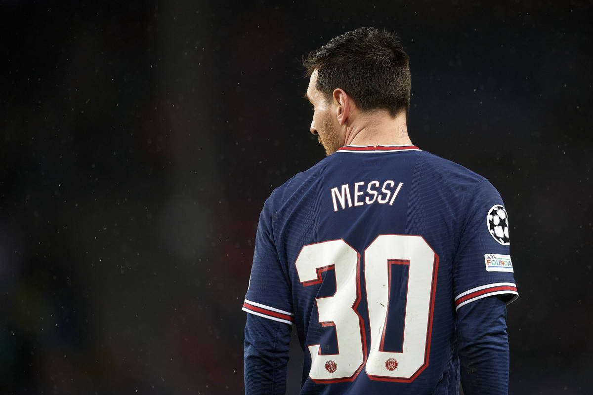

Mala racha
de Messi en PSG
El mejor del mundo volvió a sufrir
a ese palo en la derrota
contra
Rennes y alarga su marca
negativa.

Lionel Messi fue titular en la derrota del París Saint-Germain 2 - 0 contra el Rennes por la fecha 9 de la Ligue 1 y el 30 del conjunto perdedor llegó a una increíble racha negativa de tres travesaños en cuatro partidos que le negaron el gol en el torneo francés y la Champions League.